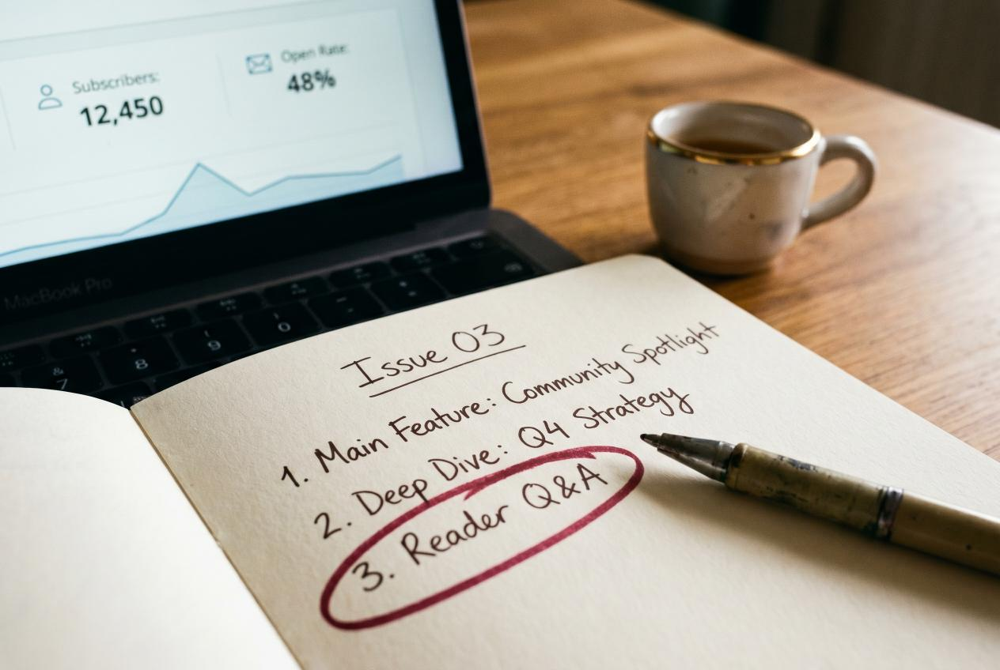

Pick wrong and you'll spend a Saturday a year from now exporting subscribers, rebuilding automations, and praying your deliverability survives the move. Pick right and you'll spend that Saturday writing the next chapter.
Substack and Mailchimp are the two platforms most indie authors actually choose between in 2026. Kit (formerly ConvertKit) and Beehiiv enter the conversation once you have momentum, but the foundational fork in the road is Substack vs Mailchimp — and the answer depends less on features and more on what kind of author career you're building.
This is the working version of the comparison. Costs, deliverability, what each platform actually does well for authors, when to switch, and the realistic numbers behind each.
The Core Difference (and Why It Matters)
Substack is a publication. Mailchimp is an email tool.
- Substack is built around a public-facing publication with comments, recommendations, a discovery feed, paid subscriptions, and a network effect. Your newsletter has a URL anyone can visit and subscribe to. Substack takes 10% of any paid subscription revenue plus the Stripe processing fee.
- Mailchimp is a private email-sending platform. Your newsletter goes to people who already gave you their email. There's no public URL, no discovery feed, no built-in monetization layer. You pay a monthly fee based on list size.
That single difference dictates everything downstream. Substack helps you get found; Mailchimp helps you stay in inboxes. Authors who already have an audience and need a newsletter tool often pick Mailchimp (or Kit). Authors who don't have an audience and want a discovery network often pick Substack.
Cost Comparison — Real Numbers in 2026

This is where the marketing pages mislead. Real costs at common author list sizes:
| List size | Substack | Mailchimp Standard | Kit (ConvertKit) Creator |
|---|---|---|---|
| 0 subs | Free | Free up to 500 | Free up to 10K |
| 500 subs | Free + 10% of any paid revenue | $20/mo | Free |
| 2,500 subs | Free + 10% paid | $60/mo | Free |
| 10,000 subs | Free + 10% paid | $135/mo | $50/mo |
| 25,000 subs | Free + 10% paid | $290/mo | $130/mo |
Substack is genuinely free at every list size if you don't run paid subscriptions. The 10% only kicks in if you charge for a paid tier — and then it's a meaningful tax (a $5/mo subscriber generates $4.35/mo to you after Substack and Stripe fees).
Mailchimp's free tier ends at 500 subscribers and prices climb fast. Kit's free tier goes much further (10,000), making it the dark-horse winner for authors who anticipate crossing the 500-sub line but staying under 10K.
Deliverability — The Underrated Variable
A newsletter that lands in spam doesn't matter how cheap it is. Deliverability — what percentage of your sends actually reach the inbox — varies meaningfully across these platforms.
In 2026, the working ranking for author newsletters:
- Kit / ConvertKit — generally strongest deliverability for content creators; aggressive list-hygiene tools force you to prune cold subs
- Substack — strong inbox placement for first-party Gmail users; weaker on Outlook/corporate domains
- Beehiiv — good and improving; built specifically for newsletters
- Mailchimp — decent but inconsistent; deliverability depends heavily on your list hygiene
Substack's deliverability advantage is partly because their senders are usually content (not promotional) which Gmail rates higher, and partly because they actively manage IP reputation across the whole platform. The downside: if some other Substack writer in your shared IP pool gets flagged, your sends can suffer briefly.
For authors specifically, the most common deliverability killer is keeping cold subscribers on the list because "more numbers feel better." A list of 800 active openers outperforms a list of 4,000 with 6% open rate, every time.
What Substack Does Well for Authors
The case for Substack:
- Built-in discovery via Recommendations — when another writer with overlap recommends you, you typically pick up 50–800 free subs in a week. This is the closest thing to compounding network growth in the newsletter world right now.
- Notes (Substack's social feed) — short text posts that surface to non-subscribers and drive list growth. An indie author posting 3–5 notes per week can pull 30–200 new subs per month from notes alone.
- Paid subscriptions — works especially well for non-fiction authors with a deep niche (creative writing instructors, historical fiction with research angles, business authors with frameworks). $5–$8/mo tiers convert in the 2–6% range of free subs for the right author.
- Discoverability — your newsletter has a URL you can post on social, link in your author website, and that ranks in Google.
- Comments and community — a Substack post with 80 comments is a different reader experience than a Mailchimp blast with no community layer.
The case against:
- Audience portability is good but not perfect — you can export your subscriber list, but you can't bring your paid subscribers' Stripe relationships with you. Comments, recommendations, and Notes followers don't transfer.
- Limited automation — there's no real drip-sequence builder; you can't easily welcome new subscribers with a pre-written 5-email onboarding.
- No advanced segmentation — you send to everyone or to paid-only. No "send to readers who clicked the last link" or "send to subscribers in the US only."
- Lock-in risk — Substack has changed creator policies before. Authors with $50K+/year in paid subs feel real platform risk.
What Mailchimp Does Well for Authors
The case for Mailchimp:
- Mature automation — drip sequences, triggered emails, conditional logic. A 5-email welcome sequence that converts new subscribers to first-book buyers is straightforward to build (see author email funnel).
- Segmentation — send to subs who clicked X but not Y, who joined in the last 30 days, who live in specific countries.
- Landing pages and signup forms — built-in tools that integrate with your website without code.
- Long history of platform stability — fewer surprise policy changes than newer platforms.
The case against:
- No discovery layer — every subscriber must come from your own marketing. Mailchimp gives you no help acquiring readers.
- Cost scales fast — once you cross 5,000 subs, Mailchimp is one of the more expensive options.
- No native paid-subscription tools — you'd bolt on Stripe + Memberful + custom integration to charge for content.
- Mediocre author-specific features — built for small-business e-commerce. Author use cases (book launch sequences, ARC reader signups) require workarounds.
When Kit (ConvertKit) Wins
Kit deserves a paragraph here because it quietly wins for many authors who'd otherwise default to Mailchimp.
- Free up to 10K subs (vs Mailchimp's 500)
- Built specifically for creators and authors
- Cleaner automation builder than Mailchimp
- Strong deliverability
- Easy ARC-reader segmentation, book-launch sequences, lead-magnet flows
- "Recommendations" feature similar to Substack's, with growing network effect
The trade-off: no paid-subscription engine as native as Substack's, no built-in publication URL with a discovery feed.
For most fiction authors building a list to sell books (not to monetize the newsletter itself), Kit is the strongest middle ground. Mailchimp wins only if you specifically need its e-commerce integrations or you're already deeply invested.
The Decision Framework
Strip away the feature comparisons and the choice maps to four author archetypes:
Archetype 1 — Fiction author building a reader list to sell books Best: Kit. Cheap up to 10K, automation handles ARC-team and launch sequences cleanly, doesn't bait you into a paid-newsletter detour.
Archetype 2 — Non-fiction author with niche expertise who could charge for content Best: Substack. Discovery network finds your audience for free; paid tier monetizes expert-level subscribers; comments build a small community around your ideas.
Archetype 3 — Established author with an existing audience and complex automations Best: Mailchimp or Kit. Substack's automation limits will frustrate you. Stay with the email tool that supports your funnel.
Archetype 4 — Brand new author with no audience and limited time Best: Substack. The discovery layer matters more than any feature comparison. Worry about migration in two years if you outgrow it.
Most authors reading this fall into archetypes 1 or 4 — and the answer is Kit or Substack, not Mailchimp.
The Migration Reality
If you're currently on Mailchimp and considering Substack (or vice versa), the migration is straightforward but not free.
What transfers cleanly:
- Subscriber email list (CSV export from one, import to the other)
- Subscribers' opt-in dates if you preserve them
- Your back-catalog of sent emails (as imported HTML, not active sequences)
What does NOT transfer:
- Engagement data (open rates, click rates) — you start fresh
- Segments and tags — must be rebuilt
- Automations — must be rebuilt
- Subscribers' Stripe relationships if you had paid subs (they re-enter payment)
- Substack-specific things: comments, Notes followers, recommendation relationships
Realistic migration time: 4–10 hours of focused work, plus a 2–4 week deliverability dip while the new platform builds reputation with mailbox providers. Plan migration during a slow content period, not the week before launch.
Realistic Subscriber Growth — Honest Numbers
Numbers matter. What does a realistic author newsletter look like at year one and year two on each platform?
Substack (no paid book launch, no ad spend, organic only)
- Year 1: 200–1,200 subs, 35–55% open rate, 4–10 paid subs if you offer a paid tier
- Year 2: 800–4,000 subs, 30–45% open rate, 25–80 paid subs
- Growth driven by: Notes engagement, recommendations from other writers, posts that catch a moment
Mailchimp / Kit (no paid book launch, no ad spend, organic only)
- Year 1: 100–600 subs, 35–50% open rate, no paid tier
- Year 2: 400–2,000 subs, 30–45% open rate
- Growth driven by: lead magnets on your author website, reader-magnet swaps with other authors, book back-matter
Substack tends to outgrow plain-email platforms by 2–3x in the first 24 months for authors with no pre-existing audience, because the discovery layer compounds. Mailchimp/Kit can match or exceed that growth if you're running paid acquisition (Facebook Ads, TikTok ads) or appearing on a podcast tour regularly.
Paid Subscriptions for Authors — Does It Work?
The honest answer: yes for some authors, no for most.
Paid newsletter subs work when:
- Your content has standalone value beyond the book (frameworks, research, exclusive analysis)
- You have a clear weekly or bi-weekly cadence
- You're a non-fiction author or a fiction author with a deep craft / world-building angle that fans pay for
- You can sustain it without burning out
Realistic paid-sub conversion: 1.5–4% of free subs in year one for the right fit; 0.5–1.5% for most authors. So a 2,000-subscriber free list might support 30–60 paid subs at $5/mo — $1,800–$3,600/year minus 10% Substack + Stripe fees. That's not nothing, but it's not life-changing either.
For most fiction authors, the sane default is: keep the newsletter free, use it to drive book sales, and reserve paid tiers for when the audience is genuinely demanding more.
What VUGA Does for Newsletter Authors
A growing newsletter compounds when readers see your name elsewhere. A press feature in TIME, Rolling Stone, or one of our 104 owned outlets drives 30-day sub spikes of 80–400 net new subscribers — the article gets indexed by Google, drives referral traffic, and the readers who land on your site convert at 2–6% to your newsletter signup.
VUGA's role for newsletter-building authors is the press feature that drives the sub spike — full editorial articles (not press releases) that are real journalism, on real outlets, with real bylines. Authors typically schedule a press feature 30–60 days before a book launch so the sub list is at peak size when they need it most.
The Trial package at $97 is the most common entry point for authors testing the press-to-newsletter funnel — one editorial article, measurable sub-growth lift, low risk. The Authority package adds TIME or Rolling Stone for authors with bigger launch ambitions. See for-authors or contact us to map a press-plus-newsletter campaign.
A 30-Day Decision and Setup Sprint
If you're stuck deciding between platforms, run this 30-day sprint:
Days 1–7: Decide
- Pick your archetype from the framework above
- If still tied, default to Substack for new authors and Kit for established ones
- Don't pick Mailchimp unless you have a specific automation requirement
Days 8–14: Set up
- Create account, set up sender domain authentication (SPF, DKIM, DMARC)
- Write welcome email (one email if Substack; 3–5 sequence if Kit)
- Add signup form to your author website
- Create first lead magnet (free chapter, character guide, story bible excerpt)
Days 15–25: Seed
- Import your existing email contacts (with their permission)
- Write your first 3 issues — publish weekly
- Cross-post to social with a "subscribe here" CTA
- If on Substack, start posting Notes 3x/week
Days 26–30: Audit
- Open rates, click rates, subscriber growth
- Which content gets the most engagement?
- Do you actually enjoy writing in this format?
If by day 30 you have 50+ subscribers and 40%+ open rate, the platform fits. If you have 10 subscribers and a sense of dread, you picked wrong — switch fast, before you have more to migrate.
Final Reality Check
There's no universal winner between Substack and Mailchimp for authors. There's a contextual winner — and for most indie authors in 2026, that winner is Substack (if you have no audience yet and want discovery) or Kit (if you have one and want automation). Mailchimp wins specific edge cases but loses on most author use cases that mattered five years ago.
The platform matters less than the consistency. An author who picks Substack and writes weekly for two years will outperform an author who agonizes for six months over the platform comparison and never publishes. Pick, set up, ship.
If you want to add a press-feature-driven sub spike to your newsletter growth plan, VUGA's Trial package is the fastest way to test that lever. Or contact us to scope a press-plus-newsletter launch.
Sources for this article:
- Substack, "How Substack works for writers"
- Mailchimp, "Pricing and plans"
- Kit (formerly ConvertKit), "Pricing"
- Beehiiv, "Newsletter platform comparison"
- Reedsy, "Email marketing for authors"
- Jane Friedman, "Newsletter platforms for authors"